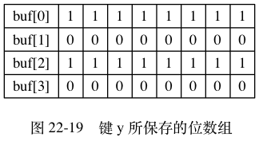
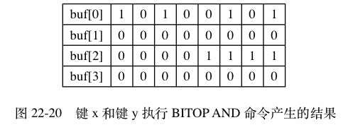
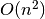
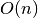

BITOP 命令的实现¶
因为 C 语言直接支持对字节执行逻辑与（&）、逻辑或（|）、逻辑异或（^）和逻辑非（~）操作，
所以 BITOP 命令的 AND 、 OR 、 XOR 和 NOT 四个操作都是直接基于这些逻辑操作实现的：
- 在执行 BITOP AND 命令时，
程序用
&操作计算出所有输入二进制位的逻辑与结果， 然后保存在指定的键上面。 - 在执行 BITOP OR 命令时，
程序用
|操作计算出所有输入二进制位的逻辑或结果， 然后保存在指定的键上面。 - 在执行 BITOP XOR 命令时，
程序用
^操作计算出所有输入二进制位的逻辑异或结果， 然后保存在指定的键上面。 - 在执行 BITOP NOT 命令时，
程序用
~操作计算出输入二进制位的逻辑非结果， 然后保存在指定的键上面。
举个例子， 假设客户端执行命令：
BITOP AND result x y
其中，
键 x 保存的位数组如图 22-18 所示，
而键 y 保存的位数组如图 22-19 所示，
BITOP 命令将执行以下操作：
- 创建一个空白的位数组
value， 用于保存AND操作的结果。 - 对两个位数组的第一个字节执行
buf[0] & buf[0]操作， 并将结果保存到value[0]字节。 - 对两个位数组的第二个字节执行
buf[1] & buf[1]操作， 并将结果保存到value[1]字节。 - 对两个位数组的第三个字节执行
buf[2] & buf[2]操作， 并将结果保存到value[2]字节。 - 经过前面的三次逻辑与操作，
程序得到了图 22-20 所示的计算结果，
并将它保存在键
result上面。
![digraph {
label = "\n 图 22-18 键 x 所保存的位数组";
rankdir = LR;
node [shape = record];
buf1 [label = " { buf[0] | 1 | 0 | 1 | 0 | 0 | 1 | 0 | 1 } | { buf[1] | 1 | 1 | 0 | 0 | 0 | 0 | 1 | 1 } | { buf[2] | 0 | 0 | 0 | 0 | 1 | 1 | 1 | 1 } | { buf[3] | 0 | 0 | 0 | 0 | 0 | 0 | 0 | 0 } "];
}](../../_images/graphviz-cbfd05fd5f97bef8c3bd96c282a4ec867e65ba01.png)


BITOP OR 、 BITOP XOR 、 BITOP NOT 命令的执行过程和这里列出的 BITOP AND 的执行过程类似。
因为 BITOP AND 、 BITOP OR 、 BITOP XOR 三个命令可以接受多个位数组作为输入，
程序需要遍历输入的每个位数组的每个字节来进行计算，
所以这些命令的复杂度为  ；
与此相反，
因为 BITOP NOT 命令只接受一个位数组输入，
所以它的复杂度为  。